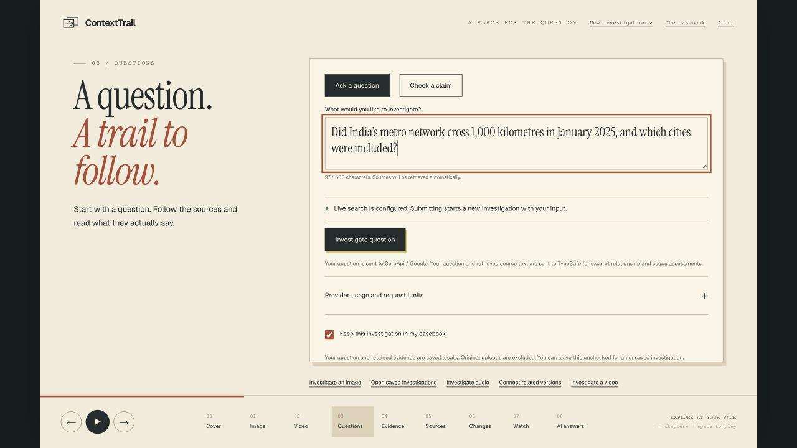
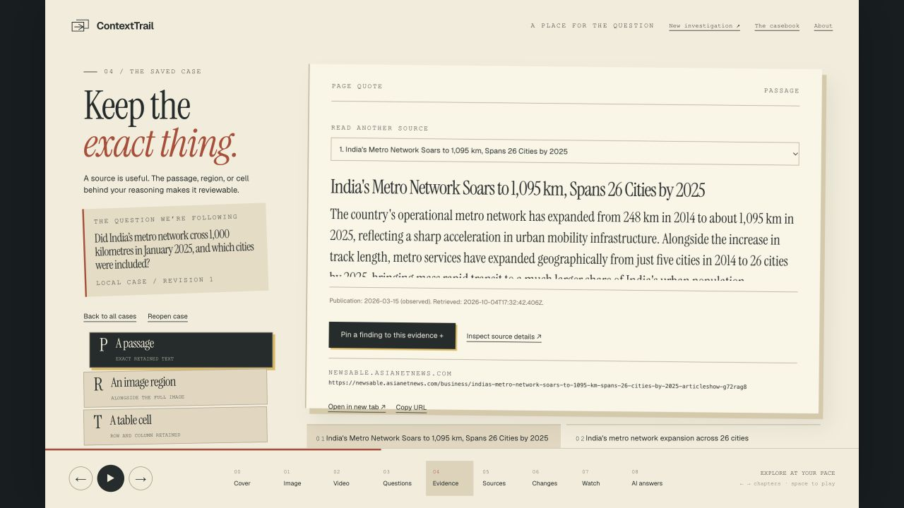
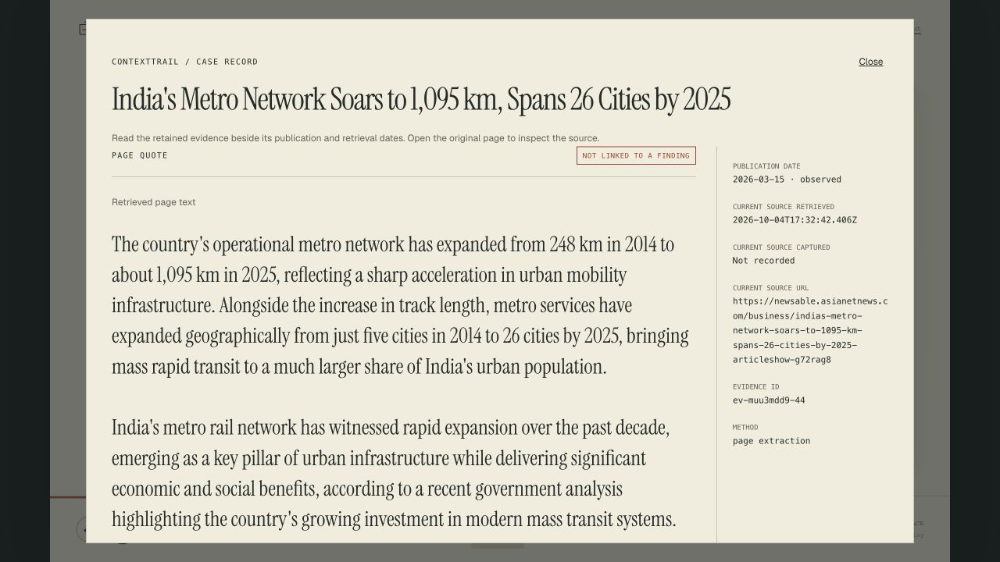
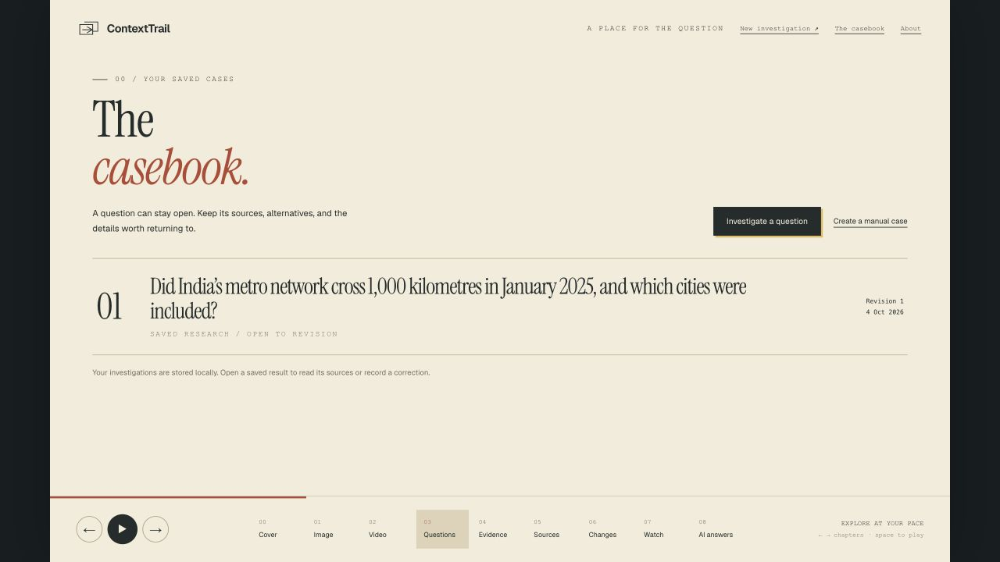

ContextTrailA place for the question
Bring something you want to understand.
ContextTrail
Find the sources behind
questions, claims and media.
A question becomes a trail
Ask.
Read.
Return.
Sources you can inspect.
Evidence you can keep.
Your question starts
the investigation.

Actual live run · search wait shortened


Same live run · retained source inspection
Publication ≠ the date of the event

Saved case · reopening makes no provider requests
ContextTrailA place for the question
Your next question
ContextTrail
Bring something you
want to understand.
Bring your question ↗
ContextTrail finds the sources behind questions, claims, and
media.
1,000 kilometers of Metro by January 2025?
Ask once, ContextTrail searches and reads the
sources.
Read the passage, which date does that number
actually describe?
keep publication and retrieval dates separate.
Come back to the exact evidence.
Your investigation is saved.
Bring something you want to understand.